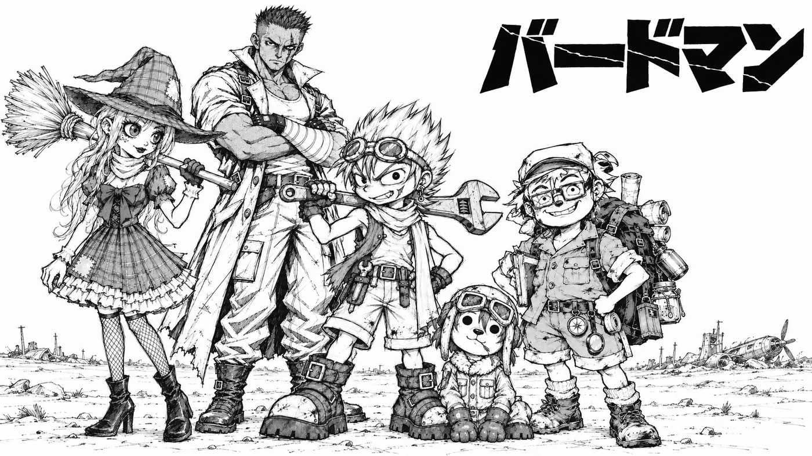

<!doctype html>
<html lang="ja">
<meta charset="utf-8">
<meta name="viewport" content="width=device-width,initial-scale=1,viewport-fit=cover">
<title>漫画棚</title>
<meta name="description" content="白黒のペン画で描く、読み切りと連載。">
<meta property="og:type" content="website">
<meta property="og:title" content="漫画棚">
<meta property="og:description" content="白黒のペン画で描く、読み切りと連載。">
<meta property="og:image" content="https://bench-works.github.io/manga/img/birdman/card.png">
<meta property="og:url" content="https://bench-works.github.io/manga/">
<meta name="twitter:card" content="summary_large_image">
<link rel="icon" href="a/icon.png">
<link rel="preconnect" href="https://fonts.googleapis.com">
<link rel="preconnect" href="https://fonts.gstatic.com" crossorigin>
<link rel="stylesheet" href="https://fonts.googleapis.com/css2?family=Shippori+Mincho+B1:wght@600;800&family=Zen+Kaku+Gothic+New:wght@400;500;700&display=swap">
<link rel="stylesheet" href="a/site.css">
<header class="bar"><div class="wrap"><a class="home" href="">漫画棚</a><span class="spacer"></span></div><div class="rail"><span id="rail"></span></div></header>
<main class="wrap">
<section style="padding-block:34px 0">
  <h1 style="font-size:clamp(26px,7vw,36px)">漫画棚</h1>
  <p class="logline" style="color:var(--dim);margin-top:12px">白黒のペン画で描く、読み切りと連載。</p>
</section>
<section class="shelf"><a class="card" href="w/birdman/">
  
  <div><p class="meta">連載中　1話公開中　全22ページ</p>
  <h2>バードマン</h2><p class="l">空を飛べない世界で、飛んだまま帰らなかった男を追って、少年が墜ちた機体を直す話。</p></div></a></section>
</main>
<footer class="wrap"><p>漫画棚 — 白黒のペン画で描く、読み切りと連載。</p><p><a href="">作品の一覧へ</a></p></footer>
